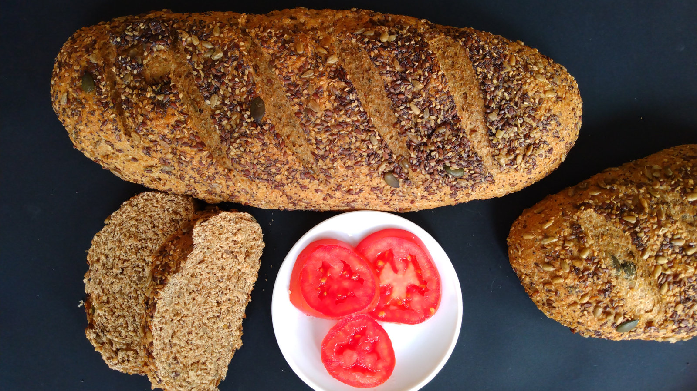

Pan de Semillas
- Preparación: 50 min
- Tiempo de levado: 1-2 h
- Horneado: 30-35 min
- Porciones: 2 hogazas
INGREDIENTES
- 6 ½ - 7 tazas (900 g - 1 kg) de harina de trigo integral
- 3 cucharaditas (9.3 g) de levadura seca
- 3 cucharaditas (15 g) de sal
- ½ taza (115 g) de azúcar
- 2 tazas (200 g) de semillas variadas (chía, amapola, girasol, calabaza, etc)
- 4 cucharadas (60 g) de aceite vegetal o de mantequilla derretida
- 2 ½ tazas (675 g) de agua tibia
DESCRIPCIÓN
Un pan integral suave, de sabor ligeramente dulce. Contiene semillas de linaza (lino) que se deben machacar antes de agregar a la masa para aprovechar mejor los nutrientes. Es el pan perfecto para desayunar o para hacer sándwiches.
INSTRUCCIONES
- Precalentar el horno a 180 °C (350 °F) y preparar una bandeja extendida con papel para hornear. Una vez caliente el horno, volcar la mezcla de semillas en la bandeja y tostarlas aproximadamente 10 minutos o hasta que desprendan un olor perfumado, cuidando que no se quemen.
- Cuando las semillas se hayan tostado, sacarlas del horno y dejarlas enfriar unos minutos. Remojarlas en agua limpia por aproximadamente media hora. Una vez pasado este tiempo, dejarlas escurrir en un colador fino para eliminar el exceso de agua. Reservar una tercera parte de las semillas para decorar las hogazas.
- Mientras se escurren las semillas, en un recipiente profundo mezclar la harina, levadura, sal y azúcar . Luego agregar el aceite o mantequilla derretida y la mitad del agua tibia y mezclar con una cuchara de madera hasta formar una masa homogénea que estará mas bien reseca. Añadir las semillas poco a poco y amasar hasta incorporarlas en la mezcla. Si hace falta, agregar el resto del agua. La cantidad de agua de la mezcla dependerá de cuanta agua hemos logrado retirar de las semillas que etuvieron en remojo.
- Volcar la masa sobre una superficie de trabajo ligeramente enharinada. Amasar por aproximadamente 10 minutos hasta obtener una masa tersa y poco elástica. Dar forma de bola y colocar la masa en un recipiente hondo ligeramente engrasado. Cubrir el recipiente con plástico y dejar levar la masa hasta que casi duplique su tamaño (entre una y dos horas).
- Cuando la masa haya levado, deshincharla suavemente y pasarla a la superficie de trabajo para dividirla en dos mitades. Dar forma de hogaza o de barra a cada una de las partes. Rociar con agua fresca las hogazas y pasarlas por encima de las semillas que hemos reservado para decoración. El agua permitirá que las semillas se adhieran a la superficie. Colocar las hogazas en una bandeja para horno, cubrir con plástico y dejar levar hasta que casi dupliquen su tamaño, aproximadamente 30 minutos.
- Cuando las hogazas casi hayan duplicado su tamaño precalentar el horno a 175 °C (350 °F). Hacer cortes profundos diagonales con un cuchillo bien afilado en las hogazas y finalmente, hornear 30-35 minutos o hasta que la corteza de las hogazas se tornen doradas. Desmoldar cuidadosamente y dejar enfriar totalmente sobre una rejilla antes de servir.
Notas
- Se tenemos mucha prisa, los dos primeros pasos pueden omitirse y las semillas se pueden usar sin hornear o sin remojar (o sin ninguno de los dos procesos) y aunque el resultado será un pan menos fragante (al omitir el tostado) y algo reseco (al omitir el remojo), será también bastante aceptable.